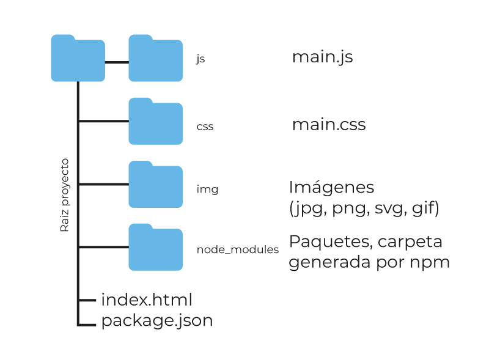
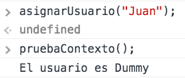
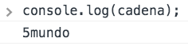

Herramientas - Workflow
- Administrador de paquetes
- Repositorio
- CSS - Preprocesadores
- Task Runners - Module Bundlers
- Linter
Administrador de paquetes
Antes de los administradores de paquetes, era muy complicado mantener la información de versión del código, de las librerías y de las herramientas de un proyecto. Cuando se enviaba el código a producción, también habian problemas de configuración porque el ambiente de desarrollo y de pruebas era diferente.
Administrador de paquetes
Actualmente se ha mitigado el esfuerzo que requiere administrar las versiones del código y de librerías, por medio de uso de un repositorio con una buenas prácticas, pero sobretodo por el uso de herramientas como los adminsitradores de paquetes, que estan presente como un complemento a los lenguajes de programación.
Definición
Los administradores de paquetes no tienen nada de complicados, se pueden ver como una tienda de aplicaciones. Es decir, simplemente se tiene que buscar el programa que se quiere instalar y decirle al administrador que lo descargue y lo instale en nuestro equipo. Todo esto sin que el usuario tenga que ir pasando por los asistentes de instalación como es el caso con los archivos .exe.
Cuando una actualización está disponible, el administrador de paquetes detectará la actualización y la descargará. A diferencia de Windows, en donde las aplicaciones necesitan tener su propio actualizador.
NPM (Node Package Manager)
NPM es el administrador de paquetes de javascript, se instala junto con la instalación de node js, esta es una herramienta que se ejecuta en la consola, no tiene interfaz gráfica. Cuando se instala, lo que usamos es un comando, llamado npm, que por medio de parametros, es decir formas diferentes de escribir el comando en consola, permite realizar diferentes actividades sobre un proyecto.
Estructura de un proyecto
El archivo package.json y la carpeta node_modules, se pueden crear usando npm
Para crear el archivo "package.json" de la imagen anterior, se usa el siguiente comando:
npm init -y
init -y: son parametros que indica que el archivo se crea sin pedir datos.
Se crea el archivo package.json, con el siguiente contenido:
{
"name": "javascript",
"version": "1.0.0",
"description": "",
"main": "index.js",
"scripts": {
"test": "echo \"Error: no test specified\" && exit 1"
},
"keywords": [],
"author": "",
"license": "ISC"
}
El archivo package.json, contiene la información del proyecto, por el momento nos enfocamos en las dependencias, para instalar una dependencia, se debe leer la documentación del paquete que se va a vincular al proyecto, por ejemplo
npm install grunt --save-dev
Se espera que se descargue el paquete (requiere conexión a internet) y luego se actualiza el archivo package.json y se crea la carpeta node_modules, con los archivos del paquete.
Se agrega una nueva instrucción al archivo package.json, cada nueva dependencia se actualiza en este archivo.
{
"name": "javascript",
"version": "1.0.0",
"description": "",
"main": "index.js",
"scripts": {
"test": "echo \"Error: no test specified\" && exit 1"
},
"keywords": [],
"author": "",
"license": "ISC",
"devDependencies": {
"grunt": "^1.0.4"
}
}
🚨⚠️ node_modules NO se debe subir al servidor de producción ⚠️🚨
node_modules se debe ignorar en el repositorio
node_modules, nos se sube al repositorio, ya que no es necesario, porque las dependencias ocupan espacio, son archivos creados por terceros y en el repositorio la idea es tener solamente código que cambia, que es el que esta en constante desarrollo.
Los paquetes se descargan de manera controlada por el administrador de paquetes, utilizando la información presente en el archivo package.json.
Para instalar los paquetes, debemos tener el archivo package.json con la información de las dependencias, luego se escribe el siguiente comando en la terminal:
npm install
Recuerde ejecutar el archivo abriendo la terminal en la raíz del proyecto
package.json se debe agregar al repositorio, ya que este es el archivo de configuración con la información de las dependencias del proyecto.
Las dependencias se descargan y la carpeta
node_modulos se crea, cada vez que se ejecuta
el comando con el parametro de instalación.
Si por alguna razón se daña algun archivo, o las dependencias quedan en un estado corrupto, se puede borrar la carpeta node_modulos, y se reinstala
nuevamente los paquetes.
Introducción a javascript
- Generalidades de javascript
- Referencia a elementos
- Manejo de eventos
- Manipulación del DOM
- Cambiando estilos dinámicamente
- LocalStorage
Generalidades de javascript
Javascript es una nueva capa que se agrega al proceso de construcción de un documento, esta capa tiene que ver con la interacción es decir la capacidad de reacción que tiene un documento teniendo en cuenta el uso de la interfaz por parte del usuario.
Generalidades de javascript
Esta capa es independiente de la estructura y del look de la aplicación. Se puede crear interacción entre el documento y el usuario, entre los estilos y la estructura y muchas más combinaciones entre capas, siempre y cuando se mantengan desacopladas las diferentes partes de todo el sistema.
Generalidades de javascript
Generalidades de js - Variables
Una de las principales ventajas de javascript, esta en como se aplica el concepto de variable por parte del lenguaje.
- No es necesario declarar una variable antes de usarla
- Las variables se crean en el momento que se usan
- Se denominan variables tipo camaleón, ya que estas cambian dependiendo de su contenido
- Son versátiles y muy flexibles a la hora de programar
Generalidades de js - Variables
Aunque las variables de javascript son muy flexibles y dinámicas, se recomienda tener buenas prácticas
- Declarar siempre la variable antes de usarla con la palabra reservada var
- Evitar el uso de variables globales, es decir las que no se declaran usando var
- Usar variables nemotécnicas
Generalidades de js - Contexto variable
Normalmente las aplicaciones en javascript, no tienen en cuenta el contexto de una variable, porque no se usa la palabra var para declarar una variable previamente. Es frecuente encontrar problemas donde se ve afectada la logica del programa porque se sobreescriben valores, las variables llegan con valores previos de otros procedimientos entre otras cosas.
Por tanto para crear un contexto de variable, se puede empezar a seguir la regla ya mencionada: Declarar la variable usando la palabra reservada var.
Generalidades de js - Manejo de tipos
Javascript no es un lenguaje tipado estricto, podemos reconocer y usar tipos cuando se asigna un dato de un tipo específico a una variable, en ese momente se dice que la variable es del tipo específico. Representación de los datos de frecuente uso:

Generalidades de js - Estructuras de control
Javascript se basa en ECMAScript donde se define un lenguaje de tipos dinámicos, con un parecido a java y C. Otros lenguajes con Actionscript se basa en este estandar para definir su sintaxis. Si es su primer acercamiento a javascript y llega de otros lenguajes de programación, se va a dar cuenta que javascript utiliza la misma sintaxis para usar estructuras de control dentro de un programa, salvo algunas diferencias que tienen relación principalmente con los valores tipo camaleón.
Generalidades de js - if
El condicional funciona similar que en otros lenguajes, pero se debe tener en cuenta que la condición que evalua el if, considera verdadero, cualquier valor diferente de 0, false, undefined o null.

Generalidades de js - Operador ternario
Se usa por lo general para asignar un valor a una variable después de evaluar una condición, se debe mantener la estructura muy simple, en caso contrario se debe usar un if.
Generalidades de js - if anidado Switch
Se encarga de agrupar varias comparaciones bajo una misma variable, que puede ser un número, una cadena o inlcuso un valor génerico como por ejemplo undefined.
Generalidades de js - if anidado Switch
Esta estructura se adapta bien a la mayoria de tipos de datos, pudiendo combinar las opciones.
Generalidades de js - Ciclos
Al igual que en otros lenguajes esta estructura es de bastante utilidad para iterar sobre un grupo de elementos, la diferencia principal de javascript, radica en como el lenguaje evalua las condiciones de iteracción, como se explicó en los condicionales "if".
Generalidades de js - while
Mientras que la condición sea verdadera se ejecuta el ciclo.
Generalidades de js - while
Se puede crear un ciclo que dependa de una variable númerica, que termina cuando esta llega a cero.

Generalidades de js - do While
Ciclo hasta que, este ciclo se ejecuta por lo menos una vez.
Generalidades de js - do While
La cadena vacia se evalua como falsa en una condición por tanto podemos hacer los siguiente.

Generalidades de js - for
Ciclo para, que se ejecuta para todos los valores dentro del rango definido por el ciclo, que va desde un valor inicial hasta un valor final. Es clave el incremento o decremento que debe en lo posible debe estar relacionado con la condición de parada.
Generalidades de js - for
El decremento o decremento de un ciclo for, también se puede operar usando el operador asignación y combinando los operadores algebráicos. Note que la variable se declaro usando var dentro del ciclo, pero esto no determina que la variable no exista por fuera de él.
Generalidades de js - Uso de funciones
El uso de funciones es una de las principales características del lenguaje, se debe tener precaución porque su facilidad facilita un uso incorrecto y la creación de código espagueti.
Generalidades de js - Uso de funciones
Firma de una función:
Generalidades de js - Uso de funciones
Invocando una función:

Generalidades de js - Uso de funciones
Función que espera argumentos y retorna un valor:
Generalidades de js - Uso de funciones
Función que espera un argumento pero no retorna un valor:

Generalidades de js - Uso de funciones
Función que no espera argumentos y no retorna un valor:
Generalidades de js - Uso de funciones
Función que no espera argumentos y retorna un valor:
Generalidades de js - Contexto variable

Generalidades de js - Contexto variable
Es muy importante tener el control del contexto de la variable, para evitar errores en la lógica del programa. Al invocar las funciones se obtiene una respuesta diferente a la esperada.
Generalidades de js - Cadenas
Las cadenas son muy importantes en javascript, sobretodo cuando se manipula el DOM del documento html, para preparar el formato que se va a inyectar (imprimir) en el documento.
Generalidades de js - Cadenas
El operador concatencación de cadenas (+) puede funcionar de manera diferente, dependiendo del valor previo de la variable.
Generalidades de js - Arrays
Un array en javascript es una estructura dinámica por defecto, es posible agregar, remover y consultar propiedades en tiempo de ejecución usando una sitnaxis muy simple.

Generalidades de js - Arrays
Los indices de un array por lo general son números enteros, pero en javascript, puede ser casi que cualquier valor representable en el lenguaje. Cuando se usa un valor diferente como indice, se debe usar la estructura for-in para recorrer los valores del array.
Generalidades de js - Objetos
Los objetos en javascript se benefician de las capacidades dinámicas del lenguaje, por tanto es posible tener objetos que van mutando en tiempo de ejecución, creando nuevas propiedades, nuevos métodos, nuevas relaciones. Los objetos no estan amarrados a la definición de una clase, pero podrían estarlo. El lenguaje trae por defecto la definición de varias clase, como Math y String o otras más nuevas aportadas por el estandar html5 como LocalStorage, Workers, entre otros.
Generalidades de js - Objetos
Para crear un objeto en javascript se puede hacer de diferentes formas, la más usada es por medio de el uso de llaves y luego por medio del operador punto asignar valores o pregutnar por un valor.

Generalidades de js - Objetos
Javascript tiene predefinidos una serie de objetos bastante útiles a la hora de programar para no empezar desde cero.

Generalidades de js - Objetos
console.log: Función que permite hacer debug en la ventana de desarrollador del navegador y se encarga de dar imprimir un valor que se le pase como argumento.
console.dir: Similar a la función anterior, pero utiliza un formato más descriptivo para ver una variable en memoria, se usa por lo general para imprimir objetos o arrays.
Generalidades de js - Objetos

Generalidades de js - JSON
Javascript Object Notation, es el formato de representación de objetos en javascript y se ha vuelto popular como interfaz para el intercambio de información entre sistema, por su fácil representación y lo más importante es que no necesita un tiempo extra para ser parseado o cargado en una estructura en memoria.
Generalidades de js - JSON
Referencia a elementos
Para manipular elementos de la estructura del documento html es importante tener una referencia a uno o varios elementos html, para esto es importante recordar los selectores que se usan en el documento para realizar la maquetación de estilos. Cuando asignamos reglas de estilos a un elemento se debe hacer a través de un selector, javascript retoma esta práctica que permite al desarrollador usar la misma mécanica para obtener referencias de los elementos que se quieren manipular.
Referencia a elementos
Hay varias formas de obtener elementos del DOM "El DOM es una interfaz de programación de aplicaciones para acceder, añadir y cambiar dinámicamente contenido estructurado en documentos con lenguajes como ECMAScript"-wikipedia
- Por identificador
- Por clase
- Por selector universal
- Por selector CSS
- Por colecciones de objetos
Por identificador
Los identificadores como atributos en el código html no solamente sirven para asignar reglas de estilos al elemento que queremos modificar, incluso es posible tener identificadores y clases que no tengan ningún set de reglas definidas en la hoja de estilos. Un identificador se usa en javascript para hacer referencia a un solo elemento html, es responsabilidad del desarrollador garantizar que sea un identificador único, en caso de tener varios identificadores el valor devuelto puede ser inesperado. Para que un selector pueda ser devuelto por javascript, este debe haber sido cargado en el navegador.
Por identificador
Se recomienda guardar la referencia a un selector luego de haber sido encontrado, ya que el llamado a la función getElementById, es una búsqueda sobre todo el DOM, por lo tanto hay un tiempo mientras se realiza la búsqueda que aumenta dependiendo de la estructura del documento.
Código javascript
En el html
Por clase
Esta es una forma de agrupar varios elementos que comparten características similares, es muy importante recordar que un elemento puede tener varias formas de ser referenciado dependiendo el uso que se le de, se pueden combinar estas formas, por ejemplo un elemento podría tener un selector por identificador y además una clase.
Por clase
Invocar la función getElementByClassName devuelve un array con todas las referencias a los elementos encontrados en el documento.
Código javascript

Código Html
Por clase
Para usar los selectores de clase devuelto, se debe usar notación de array para acceder a los elementos en el orden que fueron encontrados en el documento.

Selector universal
Utiliza como selector el nombre de la etiqueta, no se debe crear manualmente ningún atributo dentro de la etiqueta html, por tanto puede ser más fácil su uso.
Código javascript
Código Html
Selector universal
Tener precaución ya que si se usan nombres de etiquetas como div la cantidad de respuestas pueden ser muchas, por la generalidad de funcionamiento.
¿Cuántos divs usa la página de un periódico?

Por selector CSS
Este selector devuelve un elemento NodeList, es un array con una imagen estática (Es decir no es una vista en vivo) en el momento de la búsqueda, de los elementos que coinciden con el término de consulta.
Código html
Por selector CSS
Cambios subsecuentes en la estructura del DOM, no se veran reflejados en el NodeList, esto quiere decir que el objeto solo contendrá una lista de los elementos que tenía la consulta cuando se realizó la búsqueda y se creo la lista.
Código javascript
Por selector CSS
Resultado consolaPor colecciones de objetos
Javascript puede acceder a un grupo de arrays con tipos de elementos html conocidos. Facilita el acceso a una selección generalizada de estos elementos y su uso depende del conocimiento de la estructura del DOM en un momento dado
- document.anchors
- document.body
- document.documentElement
- document.embeds
- document.forms
- document.head
- document.images
- document.links
- document.scripts
- document.title
Por colecciones de objetos
Se podría usar la colección de enlaces de un documento para conocer todos los enlaces del documento actual y obtener el nombre del documento.
Código javascript
Código javascript
Por colecciones de objetos
Si se aplica el siguiente código, en la página de un portal web de un periódico, obtenemos todo el lista de enlaces del home o cualquier página interna.
Código javascript
Por colecciones de objetos
Luego de usar la colección de enlaces en la consola de debug de un navegador, podemos manipular la lista de todos los enlaces del documento actual.
ResultadoManejo de eventos
Los eventos son mecanismos mediante los cuales los elementos html (botones, imágenes, ventana, ...) pueden notificar de la ocurrencia de sucesos. Un evento puede ser causado por una acción del usuario (por ejemplo, cuando pasa el mouse por encima de un enlace), por el sistema (por ejemplo, transucrrió un determinado tiempo) o indirectamente por el código (Cuando el código realiza una precarga). Los elementos pueden responder a ciertos tipos de eventos predefinidos. Cuando ocurre uno de estos eventos, javascript ejecutará la función que tiene para responder a ese evento.
Manejo de eventos
El navegador funciona como una antena que esta transmitiendo todo el tiempo diferentes mensajes, y las funciones son los listeners o radios que se encargan de escuchar la señal y procesarla.

Manejo de eventos
En javascript es muy importante saber el momento indicado de ejecutar el código, ya que al ser un lenguaje que se interpreta línea a línea por el motor del navegador, debemos garantizar que todo el código y los elementos html han cargado para poder intereactuar con ellos.
Manejo de eventos
Usando addEventListener matriculamos una función para que escuche un evento específico que se produce cuando se hace click sobre un elemento. Fijese la declaración de la variable que referencia al botón.
Manejo de eventos
Note que el evento se envia como argumento a la función que escucha por un evento específico, con información muy completa de lo que acaba de pasar con la interacción del usuario.